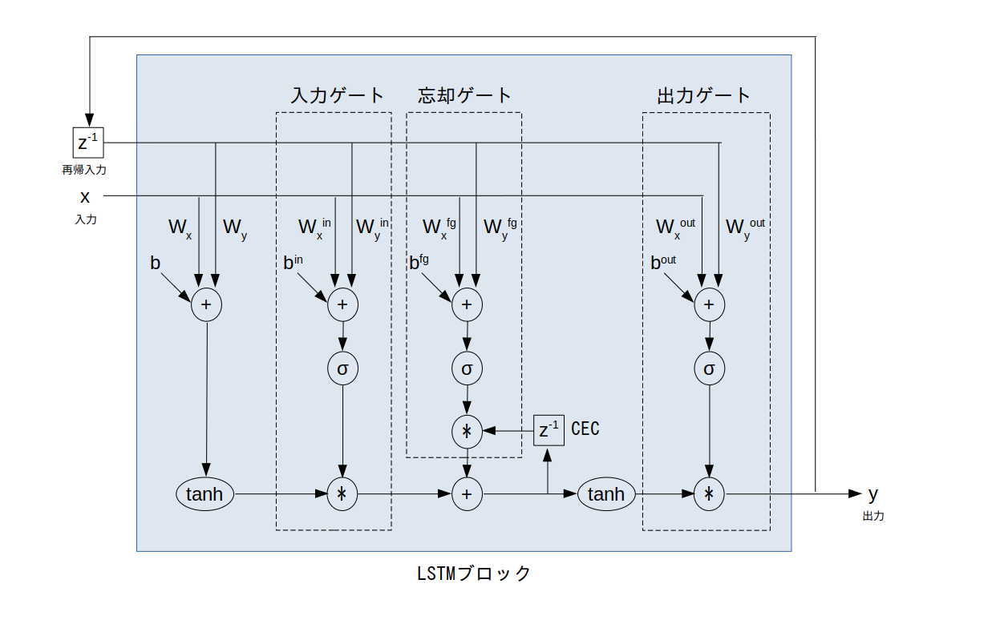

$\sigma$ ・・・ シグモイド関数
$w_x$ ・・・ 入力部において入力信号に掛けられる重み
$w_y$ ・・・ 入力部において再帰入力信号に掛けられる重み
$b$ ・・・ 入力部のバイアス
$w_x^{\textrm in}$ ・・・ 入力ゲートにおいて入力信号に掛けられる重み
$w_y^{\textrm in}$ ・・・ 入力ゲートにおいて再帰入力信号に掛けられる重み
$b^{\textrm in}$ ・・・ 入力ゲートのバイアス
$w_x^{\textrm fg}$ ・・・ 忘却ゲートにおいて入力信号に掛けられる重み
$w_y^{\textrm fg}$ ・・・ 忘却ゲートにおいて再帰入力信号に掛けられる重み
$b^{\textrm fg}$ ・・・ 忘却ゲートのバイアス
$w_x^{\textrm out}$ ・・・ 出力ゲートにおいて入力信号に掛けられる重み
$w_y^{\textrm out}$ ・・・ 出力ゲートにおいて再帰入力信号に掛けられる重み
$b^{\textrm out}$ ・・・ 出力ゲートのバイアス